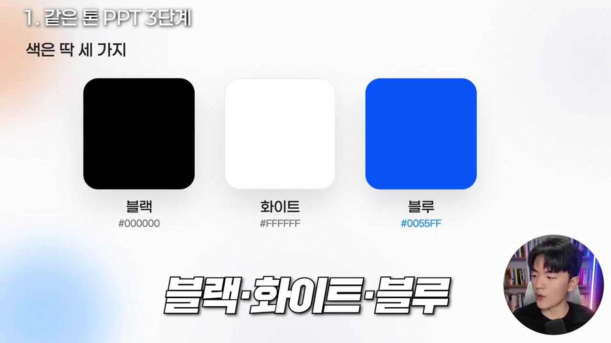
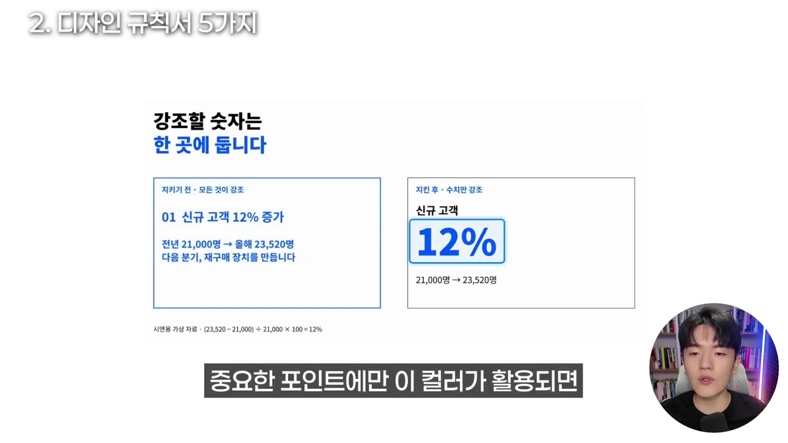
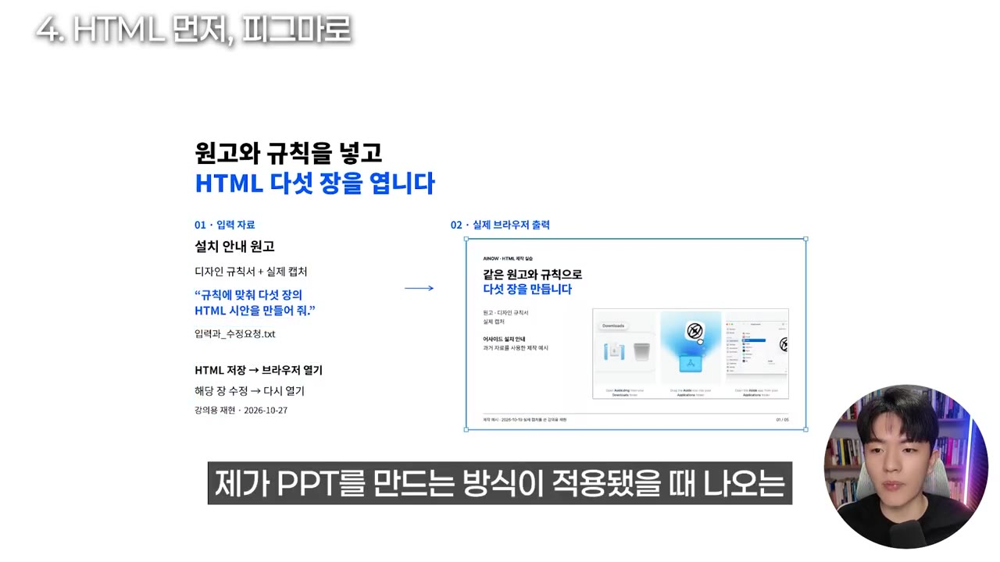
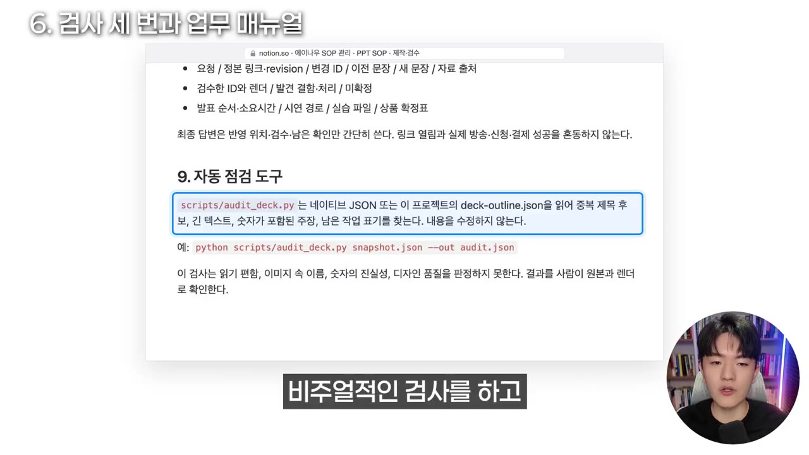
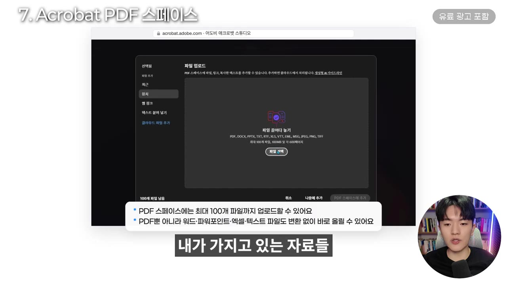
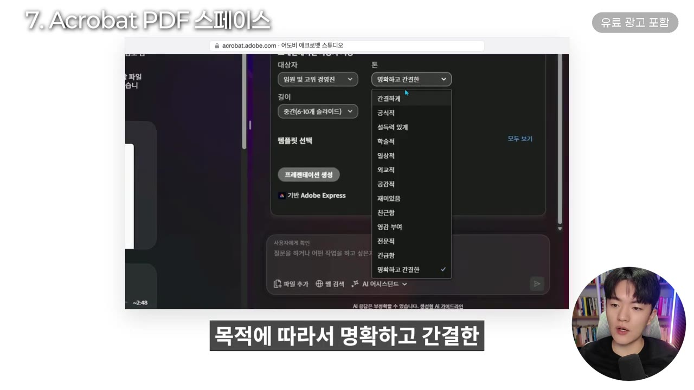

왕초보도 바로 따라할 수 있는 클로드&GPT·PDF AI로 PPT 만들기 자동화 3단계 (feat. Adobe Acrobat AI)
▶ 원본 영상 보기한눈에 보기
- AI로 만든 PPT가 매번 다르게 나오는 이유는 디자인 감각이나 프롬프트 탓이 아니라 기준(디자인 규칙서)이 없기 때문이라는 것이 영상의 핵심 주장입니다.
- 자동화는 3단계입니다. 색·글꼴·글씨 크기·글자 수·한 장 한 주제를 숫자로 정한 디자인 규칙서를 만들고, 클로드 코드·코덱스의 스킬로 저장한 뒤, 자동·눈·숫자 3가지 검사를 통과할 때까지 반복해 고칩니다.
- 영상 작성자는 HTML로 먼저 만들어 피그마로 옮기고, 오픈소스 Open Color(색상표)·Lucide(아이콘)·Mermaid(도식)를 함께 씁니다.
- 작업이 끝나면 한 문장 요청으로 스킬과 업무 매뉴얼을 만들어 두면, 다음에도 같은 품질이 나옵니다.
- 초보자는 Adobe Acrobat의 PDF 스페이스에 자료 PDF를 올리고 '프레젠테이션 만들기'로 문서 기반 PPT 초안을 만들 수 있습니다. 유료 구독이 필요하고, 이 부분은 협찬 광고입니다.
이런 분께 도움이 됩니다
- 클로드·GPT로 PPT를 만들어 봤는데 결과가 들쭉날쭉했던 직장인
- 연말 제안서·보고서·기획서를 같은 톤으로 여러 개 만들어야 하는 분
- 바로 복사해 쓸 수 있는 디자인 규칙 수치(글씨 크기·글자 수·자간)가 필요한 분
핵심 내용
결과가 들쭉날쭉한 진짜 이유: 기준이 없다
- 같은 요청으로 만들어도 어떤 장은 파란색, 어떤 장은 초록색으로 뒤섞여 나오는 것은 명확한 규칙이 없기 때문입니다. (0:45)
- "깔끔하게", "세련되게", "고퀄리티로"는 규칙이 아닙니다. 규칙은 추상적인 말 없이 숫자와 역할로 정해야 합니다. (2:26)
- 영상 작성자의 기준은 이렇습니다.
- 색은 검정·흰색·파랑 3가지만 씁니다.

- 도식화를 적극적으로 씁니다.
- 실제 화면 캡처와 사진 자료를 넣습니다.
💡 색 3개, 도식, 실제 화면. 이 세 가지만 지켜도 품질이 나빠지기 어렵다.
- 디자인 규칙서
- 스킬로 저장
- 3가지 검사
- 1디자인 규칙서
색·글꼴·크기·여백·글자 수 기준을 숫자로 정한다 (1:29)
- 2스킬로 저장
규칙서와 작업 과정을 클로드 코드·코덱스 스킬로 남겨 언제든 불러 쓴다
- 33가지 검사
시각·내용·수치를 검사하고, 문제가 있으면 반복 수정해 기준 점수를 넘기면 최종본을 낸다
디자인 규칙서 5가지
- 색에 역할을 정한다
- 파랑은 수치, 강조할 부분, 행동 유도, 흐름 표시에만 씁니다.
- 모든 것을 강조하지 말고 중요한 지점에만 쓰면 가독성이 올라갑니다.

- 위계(위아래)는 색이 아니라 크기·굵기·여백으로 만듭니다. (3:01)
- 글꼴을 분리한다
- 한글은 한글 글꼴, 영문은 영문 글꼴을 씁니다.
- 섞어 쓰면 "매출 보고"에서 "매출"만 모양이 따로 노는 일이 생깁니다.
- 꿀팁: 한글 자간(글자 사이 간격)은 0으로 둡니다. AI로 만든 티를 줄여 줍니다.
- 글씨 크기를 고정한다 (3:58)
| 요소 | 크기 |
|---|---|
| 제목 | 68px |
| 도식 제목 | 34~36px |
| 본문 | 26~30px (26px 아래로 내리지 않음) |
- 장마다 내용이 달라도 크기가 고정되어 있으면 일관돼 보입니다.
- 한 장의 글자 수를 정한다
- 글이 많으면 청중이 발표를 듣지 않고 글을 읽게 됩니다.
- 발표용이면 한 장에 약 200자가 적당하다고 합니다. 나머지는 말로 풉니다.
- 한 장에는 주제 하나만 넣는다
- 두 주제를 넣으면 앞뒤 장과 겹치고 집중력이 떨어집니다.
- 나만의 규칙을 만들고 싶다면 이렇게 합니다. (2:39)
- 핀터레스트나 구글에서 마음에 드는 PPT 예시를 찾습니다.
- AI에 "이 PPT를 기준으로 PPT 디자인 명세서를 만들어 보자"고 요청합니다.
- 컬러 코드·폰트·행간·자간·여백 규칙을 뽑아 달라고 하면 됩니다.
스킬과 업무 매뉴얼로 저장하기
- 규칙서를 매번 붙여 넣을 수는 없으므로 클로드 코드나 코덱스의 스킬(반복 작업을 저장해 두고 불러 쓰는 기능)로 남깁니다. (5:09)
- 스킬을 만들 줄 몰라도 됩니다. 작업을 마친 뒤 마지막에 한 문장만 입력합니다.
- "지금까지 우리가 작업한 모든 대화 내용과 작업 결과물을 가지고 스킬로 만들어 줘."
- 스킬은 분류별·목적별로 만들어 두고, 필요할 때 불러 씁니다.
- 스킬과 별도로 업무 매뉴얼도 만들어 둡니다. (11:04)
- "지금까지 이 모든 내용을 가지고 PPT 만드는 방법을 총정리한 업무 매뉴얼을 만들어 줘."
💡 AI는 신입 사원과 같다. 매뉴얼이 있어야 "이게 맞나요?" 하며 헤매지 않는다.
HTML로 먼저 만들고 피그마로 옮기기
- 구글 슬라이드나 캔바로 바로 만들지 않고 HTML로 먼저 만듭니다.

- 그다음 피그마로 옮깁니다. 구글 슬라이드에 옮기기도 하지만 대부분 피그마입니다. (6:05)
- 피그마를 쓰는 이유는 세 가지입니다.
- 편집 자유도가 높습니다.
- 제목·화면이 한 장짜리 이미지가 아니라 레이어로 따로 선택되어 바로 고칠 수 있습니다.
- 나중에 내부 레퍼런스로 주기 좋습니다.
- 설명 대상(웹·프로그램)의 실제 화면이나 관련 자료도 클로드 코드·GPT에 함께 찾아 넣으라고 시키면, 초안이 한 번에 취합됩니다.
- GPT로 생성한 이미지도 피그마에 바로 반영할 수 있다고 합니다. (7:38)
PPT 품질을 높이는 오픈소스 3종
- 깃허브에 올라온 오픈소스를 클로드 코드나 GPT에 주면 바로 설치해 쓸 수 있다고 합니다. (8:00)
| 이름 | 무엇인가 | 영상 속 활용 |
|---|---|---|
| Open Color | 글자·배경·테두리용 색을 단계별로 모은 색상표 | 검정·흰색·파랑은 유지하고, 회색 단계만 참고 (8:24) |
| Lucide (자막: 루사이드) | 같은 선 굵기로 통일된 아이콘 라이브러리 | PPT에 자주 쓰는 아이콘 |
| Mermaid (자막: 멀메이드) | 글로 도식·흐름도를 그리는 도구 | 영상 작성자가 가장 좋아한다는 도구. 구조를 도식으로 전달 (8:46) |
- 회사 브랜드 색이 있으면 그것을 먼저 씁니다.
마지막 단계: 3가지 검사
- 검사를 세팅해 두면 PPT 자동화가 완성된다고 합니다. (9:33)
| 검사 | 확인하는 것 |
|---|---|
| 자동 검사 | 슬라이드 밖으로 나간 글자, 글꼴 겹침 등 시각 문제 |
| 눈 검사 | 화살표, 여백, 실제 화면이 제대로 들어갔는지 |
| 숫자 검산 | 숫자 계산이 맞는지, 정확히 표기됐는지 (AI가 잘못 기입하는 경우 대비) |
- 문제가 나오면 고치는 과정을 반복하고, 검사 점수가 기준을 넘으면 최종본을 냅니다.
- 기준 점수는 영상에 나오지 않습니다.

꿀팁: 녹음으로 원천 소스부터 만든다
- PPT에 들어가기 전에 기획서, 즉 PPT에 넣을 내용을 한곳에 모은 원천 소스를 먼저 만듭니다. (10:17)
- 발표하듯 녹음
- 스크립트 정리
- 자료와 합치기
- 1발표하듯 녹음
실제로 발표한다고 생각하고 넣고 싶은 내용을 말로 녹음한다 (10:41)
- 2스크립트 정리
녹음 내용을 스크립트로 정리한다
- 3자료와 합치기
스크립트와 가지고 있는 자료를 클로드 코드·코덱스에 함께 넣어 PPT를 만든다
초보자용 대안: Adobe Acrobat PDF 스페이스
- 위 과정이 어렵다면 Acrobat의 AI 기능으로 문서 기반 PPT 초안을 만들 수 있습니다. (11:41)
- 업로드한 PDF 내용을 바탕으로 만들기 때문에 할루시네이션(AI가 지어낸 거짓 정보) 걱정이 적다고 합니다.
- 영상에서는 "아예 그런 일이 없다"고까지 말합니다. (13:21)
- 만든 PPT는 편집하고, 페이지 넘김 효과가 있는 발표 모드로 바로 발표할 수도 있습니다.
- 유료 구독이 필요합니다. AI 어시스턴트와 포토샵·익스프레스 등 어도비 기능을 함께 쓸 수 있다고 합니다. (14:09)
- 이 부분은 협찬 광고입니다. 영상 설명란에 어도비 링크가 있습니다.
따라 해보기
준비물
- AI 방식: 클로드 코드 또는 코덱스(스킬 기능 사용), 참고할 PPT 예시 이미지, 피그마 계정(선택)
- Acrobat 방식: Adobe Acrobat 유료 구독(AI 어시스턴트 포함), 자료 PDF 파일
- 비용과 소요 시간은 영상에 나오지 않습니다.
단계별 방법 — A. 클로드 코드·코덱스로 자동화
- 규칙서 작성
- 원천 소스 준비
- 오픈소스 설치
- HTML로 생성
- 3가지 검사
- 피그마로 이동
- 스킬·매뉴얼 저장
- 1규칙서 작성
위 '디자인 규칙서 5가지'를 그대로 쓰거나, 참고 PPT를 주고 "이 PPT를 기준으로 PPT 디자인 명세서를 만들어 보자"고 요청한다 (2:39)
- 컬러 코드·폰트·행간·자간·여백·글씨 크기·한 장 글자 수가 모두 들어가야 한다
- 2원천 소스 준비
발표하듯 녹음해 스크립트로 정리하고, 가진 자료를 모은다 (10:41)
- 3오픈소스 설치
Open Color·Lucide·Mermaid를 AI에 주고 설치를 요청한다 (8:24)
- 4HTML로 생성
규칙서·스크립트·자료를 주고 HTML 슬라이드로 만들게 한다. 설명 대상의 실제 화면 자료도 함께 넣게 한다
- 53가지 검사
자동 검사·눈 검사·숫자 검산을 하고, 통과할 때까지 수정을 반복한다
- 6피그마로 이동
결과를 피그마(또는 구글 슬라이드)로 옮겨 세부를 편집한다
- 7스킬·매뉴얼 저장
아래 두 문장으로 스킬과 업무 매뉴얼을 만든다
7단계에 입력할 내용
지금까지 우리가 작업한 모든 대화 내용과 작업 결과물을 가지고 스킬로 만들어 줘.
지금까지 이 모든 내용을 가지고 PPT 만드는 방법을 총정리한 업무 매뉴얼을 만들어 줘.
단계별 방법 — B. Acrobat PDF 스페이스로 초안 만들기
- 스페이스 만들기
- 파일 추가
- 프레젠테이션 만들기
- 옵션 선택
- 편집
- 발표
- 1스페이스 만들기
Adobe Acrobat에서 'PDF 스페이스 만들기'로 들어간다 (11:49)
- 2파일 추가
'파일 선택'으로 기획서·보고서·제안서 등 원본 파일을 넣고 '스페이스 추가'를 누른다
- AI가 파일 내용을 분석해 중요한 정보를 스페이스에 정리한다

PDF 스페이스 파일 업로드 창, 최대 100개 파일까지 · ▶ 12:02 - 3프레젠테이션 만들기
스페이스에서 '프레젠테이션 만들기'를 누른다 (12:12)
- 4옵션 선택
사용자 지정에서 청중(일반·경영진 등)과 목적·톤(명확하고 간결한·공식적·설득력 있게 등)을 고르고 '슬라이드 생성'을 누른다

대상자·톤 선택 목록에서 '명확하고 간결한' 고르기 · ▶ 12:37 - 5편집
오른쪽 위 연필 모양 아이콘을 눌러 내용·배치·폰트를 고친다 (12:53)
- 6발표
발표 기능으로 페이지를 넘기며 바로 발표한다
따라 할 수 있는지 점검
- ✅ 바로 따라 할 수 있음: A의 1단계(규칙 수치가 모두 나옴), A의 7단계(입력 문장 원문이 나옴), B의 1~5단계(메뉴 이름이 화면과 함께 나옴)
- ⚠️ A의 3단계 「오픈소스 설치」: 깃허브 주소와 설치 방법이 영상에 나오지 않습니다. 깃허브에서 "open-color", "lucide", "mermaid"를 검색해 저장소 주소를 찾고, 클로드 코드에 "이 저장소를 PPT 제작에 쓸 수 있게 설치해 줘"라고 요청하면 됩니다. (보충)
- ⚠️ A의 4단계 「HTML로 생성」: HTML 슬라이드를 만드는 프롬프트 원문이 영상에 없습니다. "디자인 규칙서를 지켜 슬라이드 1장=HTML 섹션 1개, 1920×1080 크기로 만들어 줘"처럼 규칙서를 첨부해 요청하면 됩니다. (보충)
- ⚠️ A의 5단계 「3가지 검사」: 검사를 어떻게 자동화하는지(프롬프트·도구)와 통과 기준 점수가 영상에서 생략됐습니다. "만든 슬라이드를 자동 검사(글자 넘침·겹침), 눈 검사(화살표·여백·실제 화면), 숫자 검산 기준으로 100점 만점 채점하고, 90점 미만이면 고쳐서 다시 채점해 줘"처럼 기준을 직접 정해 주면 됩니다. (보충)
- ⚠️ A의 6단계 「피그마로 이동」: HTML을 피그마로 옮기는 방법(플러그인 이름 등)이 영상에서 생략됐습니다. 피그마 커뮤니티에서 "HTML to Figma" 플러그인을 검색해 쓰면 됩니다. (보충)
- ⚠️ B 전체: Acrobat AI 어시스턴트 유료 구독이 있어야 합니다. 요금은 영상에 나오지 않으니 어도비 공식 사이트에서 확인하세요.
- ❓ 글씨 크기 단위가 px로만 나옵니다. 몇 px 기준 캔버스(예: 1920×1080)인지는 말하지 않았습니다.
- ❓ 영상 작성자가 쓰는 PPT 업무 매뉴얼은 댓글 반응에 따라 공유하겠다고만 했습니다.
확인 방법
- 주제가 다른 PPT 두 개를 같은 스킬로 만들었을 때, 색(검정·흰색·파랑)·제목 크기·본문 크기·글자 수가 같게 나오면 성공입니다.
- 슬라이드 밖으로 나간 글자가 없고 숫자가 원자료와 일치하는지 직접 대조해 보세요.
- Acrobat 방식은 생성된 슬라이드의 내용이 업로드한 PDF 원문과 맞는지 확인합니다.
막히면
- "깔끔하게" 같은 추상적인 말만 넣으면 규칙이 작동하지 않습니다. 반드시 숫자로 적습니다.
- 한 장에 두 주제를 넣지 않습니다. 앞뒤 장과 겹칩니다.
- AI는 숫자를 잘못 기입할 수 있으므로 숫자 검산을 빼지 않습니다.
기억할 숫자·인용
- 색 3가지: 검정·흰색·파랑. 파랑은 수치·강조·행동 유도·흐름에만 씁니다.
- 제목 68px / 도식 제목 34~36px / 본문 26~30px(최소 26px)
- 한글 자간 0
- 발표용 슬라이드 한 장 약 200자
- "깔끔하게, 세련되게 만들어 줘. 그런 건 규칙이 아닙니다."
- "AI라는 신입 사원이 어리버리하지 않게 업무 매뉴얼을 줘야 한다."
생각해볼 점
- Acrobat 협찬: Acrobat 부분은 협찬 광고입니다. "문서 기반이라 할루시네이션이 아예 없다"는 말은 영상 속 주장일 뿐입니다. 요약·재구성 과정에서 오류가 생길 수 있으니 숫자와 인용은 원문과 대조하는 편이 안전합니다. (내 의견)
- px 수치의 한계: 제시된 px 수치는 화면 크기를 전제로 한 값입니다. 파워포인트의 pt 단위나 다른 슬라이드 크기에 그대로 옮기면 맞지 않을 수 있습니다. (내 의견)
- 설명 생략: 검사 자동화와 HTML→피그마 이동은 "하면 된다" 수준으로만 설명됐습니다. 실제로 재현하려면 직접 시행착오가 필요할 수 있습니다.
바로 해볼 일
- 위 '디자인 규칙서 5가지'를 메모장에 옮겨 내 색(브랜드 색 3개)으로 바꿔 적기
- 다음 PPT 작업이 끝나면 "지금까지 우리가 작업한 모든 대화 내용과 작업 결과물을 가지고 스킬로 만들어 줘" 입력해 보기
- 발표할 내용을 3분 정도 말로 녹음해 스크립트로 만들어 두기